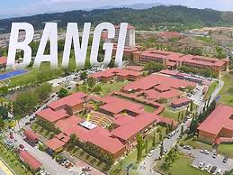

E-Resume

Sekolah Menengah Kebangsaan Durian Tunggal (2016 - 2019)
I took Accounting as my major in highschool which I learned a lot of knowledge and how to handle finance and accounting. By taking this major, I was able to prepared to further my study in higher education.
SPM: 3A 1B+ 2B 1C

KPTM Bangi (2021 - 2023)
I continued to further my study in Diploma in Accounting at KPTM Bangi. With my basic knowlegde in accounting that I learned during highschool, I was able to not only implement my skills but also improve and enhance more of my knowledge.
CGPA: 3.00

UiTM Puncak Perdana (2024 - 2026)
I decided to change my major by further my study in Bachelor in Information Science (Hons) Information Systems Management. I gained a whole new knowledge on understanding information systems and data management.
CGPA: 3.25